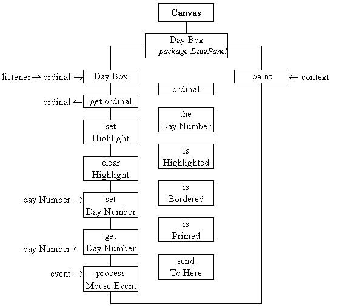

Instances of the DayBox class are used in the DatePanel artifact to supply each of the positions in the MonthPanel which can be used to display a day of the month. Each instance can be active, displaying a number indicating a date in the month, or inactive in the current configuration and shown without a number. Only active boxes respond to the entry and exit of the mouse pointer, showing a border as it traverses through it, and only active boxes will respond to a mouse click generating an event which its listener can respond to. A DayBox instance is located at an ordinal location with respect to other boxes in a MonthPanel. The class diagram for the DayBox class is given in Figure 3.13.

Figure 3.13 The DayBox class diagram.
The ordinal data attribute records the position of the DayBox in relation to all the other DayBoxes in the MonthPanel, its ordinal location is supplied to the constructor and can be obtained by the ordinalIs() method but cannot be changed after construction. The dayNumber attribute is the day of the month which the box will display and can be changed by the setDayNumber() method or queried by the getDayNumber() method. The isHighlighted attribute indicates if the box should be highlighted and the setHighlight() and clearHighlight() methods support it.
The isPrimed attribute is used internally to indicate that a mouse down event has occurred so a mouse up event should be responded to. The isBordered attribute indicates if the box should be displayed with a border, between the time the mouse pointer enters and leaves it.
The processMouseEvent() method is needed for the class to process mouse events happening within itself and the sendToHere attribute is the listener to which this method will dispatch events generated when the mouse button is released within it. The identity of the listener object is supplied to the instance in the listener attribute of its constructor.
The public paint() method will render the box onto the screen showing its theDayNumber, if valid, and with highlighting and bordering as appropriate. The implementation of this class, as far as the end of its constructor is as follows.
0001 // Filename DayBox.java.
0002 // Provides the individual boxes which contain the
0003 // day numbers in a MonthPanel.
0004 //
0005 // Written for JI book, Chapter 3 see text.
0006 // Fintan Culwin, v0.2, August 1997.
0007
0008 package DatePanel;
0009
0010 import java.awt.*;
0011 import java.awt.event.*;
0012
0013
0014 class DayBox extends Canvas {
0015
0016 private int ordinal = -1;
0017 private int theDayNumber = 0;
0018 private boolean isHighlighted = false;
0019 private boolean isBordered = false;
0020 private boolean isPrimed = false;
0021 private ActionListener sendToHere;
0022
0023
0024 protected DayBox( int itsLocation,
0025 ActionListener listener) {
0026 super();
0027 ordinal = itsLocation;
0028 this.enableEvents( AWTEvent.MOUSE_EVENT_MASK);
0029 sendToHere = listener;
0030 } // End DayBox constructor.
The header and attribute declarations contain no surprises, with line 0014 indicating that this class is a non-public member of the DatePanel package. The constructor commences by calling its parent (Canvas) constructor, stores the two arguments in their corresponding instance attributes and then, on line 0028, enables MouseEvents on this component. The methods which manipulate its attributes are as follows.
0033 protected int getOrdinal() {
0034 return ordinal;
0035 } // End ordinalIs.
0036
0037
0038 protected void setHighlight() {
0039 isHighlighted = true;
0040 this.repaint();
0041 } // End setHighlight.
0042
0043 protected void clearHighlight() {
0044 isHighlighted = false;
0045 this.repaint();
0046 } // End clearHighlight.
0047
0048
0049 protected void setDayNumber( int dayNumber) {
0050 theDayNumber = dayNumber;
0051 } // End setDayNumber
0052
0053 protected int getDayNumber() {
0054 return theDayNumber;
0055 } // End getDayNumber
The setHighlight() and clearHighlight() methods not only manipulate the value of the appropriate attribute but also call the instance's repaint() method which will, indirectly, call the paint() method whose implementation is as follows. The calling of repaint() will ensure that the effects of this change of state become visible to the user in a timely manner.
0058 public void paint( Graphics context) {
0059
0060 Dimension location;
0061 String numString;
0062 FontMetrics metrics;
0063 int stringHeight;
0064 int stringWidth;
0065
0066 location = this.getSize();
0067 context.setColor( this.getBackground());
0068 context.fillRect( 0, 0,
0069 location.width-1,
0070 location.height-1);
0071 context.setColor( this.getForeground());
0072
0073 if ( theDayNumber != 0 ) {
0074 numString = Integer.toString( theDayNumber);
0075 metrics = this.getFontMetrics( this.getFont());
0076 stringHeight = metrics.getHeight();
0077 stringWidth = metrics.stringWidth( numString);
0078 context.drawString( numString,
0079 (location.width - stringWidth)/2,
0080 (stringHeight + 2));
0081
0082 if ( isHighlighted) {
0083 context.drawRect( 2, 2,
0084 location.width - 4,
0085 location.height - 4);
0086 context.drawRect( 3, 3,
0087 location.width - 6,
0088 location.height - 6);
0089 } // End if.
0090
0091 if ( isBordered ) {
0092 context.drawRect( 1,1,
0093 location.width - 2,
0094 location.height - 2);
0095 } // End if.
0096 } // End if
0097 } // End paint.
The first part of this method, on lines 0066 to 0071, clears the entire DayBoxes' window to its background color by setting the drawing color of the Graphics context to the background color of the dayBox component and then drawing a filled rectangle over its entire extent. Before continuing the drawing color of the context is reset to the dayBox'es foreground color. If the theDayNumber attribute is zero, indicating that the dayBox is inactive, the method concludes.
If the dayBox is active, lines 0074 to 0080 render theDayNumber in the center of its window, using techniques which are comparable to those used to render a line of text into the MessageCanvas in the previous part of this chapter. The DayBox class does not attempt to establish its own size, however it can be guaranteed that its size will be large enough to contain the day number, for reasons which will be explained in the next section.
If the isHighlighted attribute is set, lines 0082 to 0089 then draw the highlight around the box by drawing two concentric outline rectangles within the limits of its extremity. Lines 0091 to 0095 then draw the single lined border, if the isBordered attribute is set, as a single outline rectangle at its extremity. Both of these parts of this method make use of the drawRectangle() method of the Graphics class which will be described in more detail in the next chapter.
The final DayBox method, processMouseEvent(), will be called every time a mouse event occurs on the component and is required to cause the component to react only if it is currently active. It should border the component when the mouse enters it, unborder the component as it leaves and dispatch an ActionEvent to its listener object if the mouse button is pressed and released within the component. Its implementation is as follows.
0100 protected void processMouseEvent( MouseEvent event) {
0101 if ( this.getDayNumber() != 0) {
0102 switch ( event.getID()) {
0103
0104 case MouseEvent.MOUSE_ENTERED:
0105 isBordered = true;
0106 repaint();
0107 break;
0108
0109 case MouseEvent.MOUSE_EXITED:
0110 isBordered = false;
0111 isPrimed = false;
0112 repaint();
0113 break;
0114
0115 case MouseEvent.MOUSE_PRESSED:
0116 isPrimed = true;
0117 break;
0118
0119 case MouseEvent.MOUSE_RELEASED:
0120 if ( this.isPrimed){
0121 sendToHere.actionPerformed(
0122 new ActionEvent( this,
0123 ActionEvent.ACTION_PERFORMED,
0124 "DateSelected"));
0125 } // End if.
0126 break;
0127 } // End switch.
0128 } // End if.
0129 } // End processMouseEvent.
Line 0101 prevents the method from being triggered if theDayNumber attribute of the DayBox is zero, which indicates that it is inactive. Otherwise the ID attribute of the event is used to select between different courses of actions in the switch structure between lines 0102 and 0127. If the ID indicates that the mouse pointer has entered the component, lines 0104 to 0107 set the isBordered attribute to true and then repaint() is called to provide feedback to the user. If the ID indicates that the mouse pointer has left the component, lines 0109 to 0113 set the isBordered attribute to false and repaint() is called. The isPrimed attribute, which may have been set true by a mouse down event, is also set false in this situation to prevent an ActionEvent from being generated when it is not supposed to be.
On lines 0115 to 0117 the isPrimed attribute is set true when the mouse button is pressed down, but as this has no visible feedback repaint() is not called. Lines 0122 to 0125 are executed when the mouse button is released within a primed component and cause the actionPerformed() method of the listener object referenced by sendToHere to be called with a new ActionEvent passed as its event argument. The three arguments to the ActionEvent constructor, on lines 0122 to 0124, are the identity of the component which generated the event (this), the ID of the event (AcitonEvent.ACTION_PERFORMED) and the ActionCommand attribute of the event ("DateSelected").
The mouse events do not directly cause the highlighting of a DayBox component. This is the responsibility of the listener object which is always the instance of the MonthPanel class within which all DayBox instances are contained. The implementation of this class will be described next.